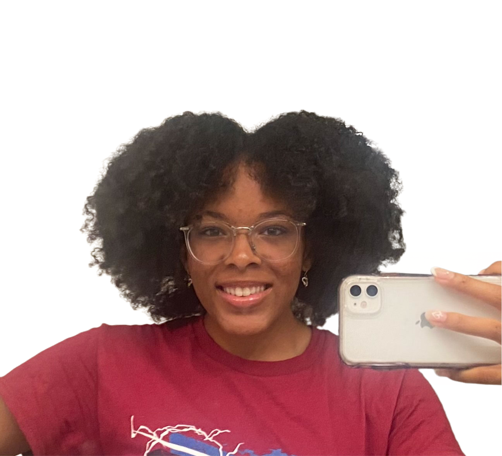

#### My Mission:
In my pursuit of a career as an engineer, with a focus on developing products that benefit marginalized communities, I often recognized that there is a lack of opportunity to see myself reflected in different STEM fields. I am passionate about fostering inclusivity while pursuing my interests in engineering, modeling, and computer science. Science and technology play extremely important roles in almost every aspect in society, especially when more advancements are being made as we gain more useful knowledge about the world and its mysteries. As I continue to grow, I hope I can make an impact on such an important aspect of life.
#### Overview:
This portfolio is an accumulation of my different projects over the years. In this website it starts with a shortened version of my longer <a href="https://kyla-apara.github.io/NEW-PHYS-S-12/index.html" target="_blank"> HSSP Digital Fabrication Portfolio </a> and ends with my projects at Carleton SLAI Summer Insitute! I also will include a few independent works as well. Stay tuned!
#### Outside of School:
- Founder & President of Girls Who Code Club Chapter
- American Sign Language Club Member
- Track & Field Team Veteran
- National Honor Society Member
- Animal Rescue Club Member
- 2021-2022: Harvard Square Homeless Shelter Voluenteer
- Hopeful Siver Lake Libray Teen Voluenteer!
I am also interested in Digital Journalism, check out the [Digital Journalism](../02_journalism/index.html) section in this portfolio!